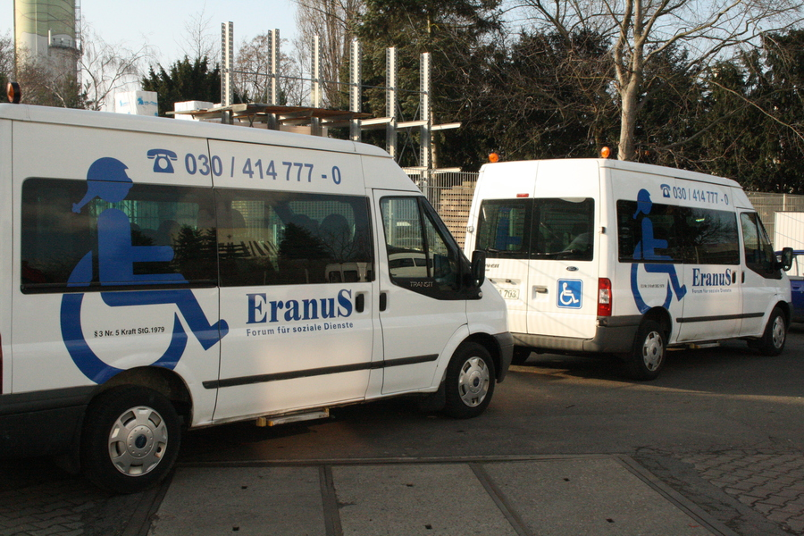
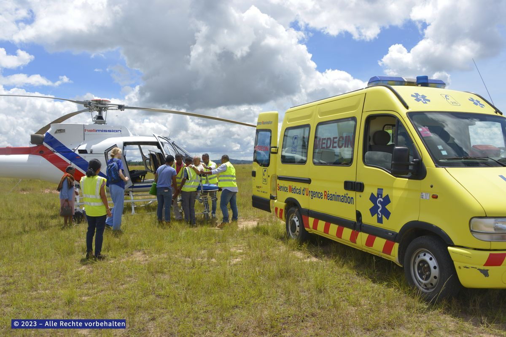
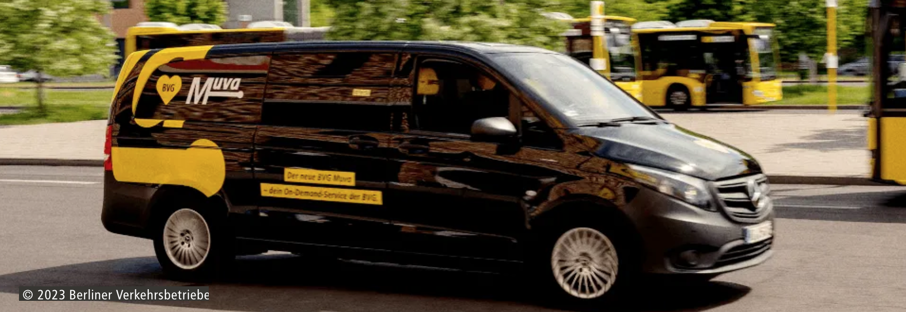

This webpage presents the current results of the
Berlin University Alliance X-Student Research Groups
"How can we design systems for intelligent vehicles?"
and "How can we model and solve challenges for the future
mobility applications?".
The overarching aim of our team is to support
students in the transition between their current
undergraduate or graduate studies and their future
postgraduate or industry careers by exposing them to research
activities in the context of mobility.
For this reason, the webpage presents a portfolio of
topics in the area of mobility for social good, including information such as
topic descriptions, research questions, working groups,
and their current findings and publications.
In addition, the webpage includes details on
publishing opportunities such as conferences,
funding opportunities such as grants, and
participation opportunities such as webinars. Finally,
we look forward to welcoming you to our team!
Opportunities
Go to the news.Go to the portfolio.
There are multiple conferences across Germany for students (e.g. StuKon, StuFo). These are normally announced at the beginning of every year. Please follow this page for up-to-date events, travel grants, and webinar information.
Announcements for 2024
- Berlin Conference for Student Research 2024: 2 October, deadline August 11
- StuKon Ilmenao 2024: 7-9 October, deadline August 8
- StuFoExpo Dresden 2024: 7 November, deadline July 19
- StuFo 2024: 24 October, deadline June 30
- StuFoTech 2024: 29 September - 1 October, extended deadline June 30
- SKILL GI 2024: 25 - 26 September, extended deadline June 2
- BUA Workshop on Open Science and Research Quality: 23 January, deadline January 12
Announcements for 2023
- StuFo Hamburg 2023: 28-29 September, deadline July 9; travel grants available
- Berlin Conference for Student Research 2023: 25 September, deadline July 31
- StuKon Bremen 2023: 21-23 August, deadline July 9
Announcements for 2022
- Stufo Berlin 2022: 4-5 October, deadline July 31; travel grants available
- StuKon Leipzig 2022: 3-5 August, deadline July 6
News
Go to the opportunities.Go to the portfolio.
News for 2024
- Martin Aleksandrov presents the paper "Learning Demands for Ride-pooling Services: A Case Study in Berlin" at the 35th IEEE INTELLIGENT VEHICLES SYMPOSIUM, IEEE IV 2024. June 2-5, 2024, Jeju Shinhwa World, Jeju Island, Korea.
- Martin Aleksandrov presents the paper "Reducing Possible Harassment during Taxi Rides by Achieving Safety and Stability". at the Transport Research Arena 2024, TRA 2024, April 15-18, 2024, Dublin, Ireland.
News for 2023
- Venura Mudiyanselage and Martin Aleksandrov present the poster "Investigating Demand Predictors for Microtransit Services: Insights from Public Transit Users in Berlin" at the 8th German Conference for Student Research, StuFo 2023, September 28, 2023, Hamburg, Germany, 2023.
- Marvin Beese presents his abstract "Routing for Relief Efforts" at the Berlin Conference for Student Research 2023, BUA 2023, September 25, 2023, Berlin, Germany.
- Tobias Labarta presents our paper "Safety, Stability, and Efficiency of Taxi Rides" at the 22nd EPIA Conference on Artificial Intelligence, EPIA 2023, September 5-8, 2023, Faial, Portugal.
- Namrata De presents her work in progress on "Taxi Matching under Multi-layer Preferences" at the Student Conference StuKon 2023, August 21-23, 2023, Bremen, Germany.
- Marvin Beese presents his work in progress on "Systems for Relief Support Units Using Imperfect and Imprecise Information" at the Student Conference StuKon 2023, August 21-23, 2023, Bremen, Germany.
News for 2022
- Khaled Alomari presents our paper "Fuel Efficiency of Garbage Truck Navigation" at the 6th IEEE Global Conference on Artificial Intelligence and Internet of Things, 2022 IEEE GCAIoT, December 18-21, 2022, Alamein New City, Egypt.
- Tobias Labarta presents our abstract "Sexual Harassment Prevention in Taxi Allocations under Gender Preferences" at the 13th Triennial International Conference of the Association of Asia Pacific Operational Research Societies, APORS 2022 , November 9-12, 2022, Quezon City, Philippines.
- Shally Jain presents her abstract "Multimodal Route Selection via Carbon Emission Measures" at the 7th German Conference for Student Research, StuFo 2022 , October 4-5, 2022, Berlin, Germany.
- Guilia Grasso presents her abstract "Minimizing the Response Time of Support Units in Earthquakes: Prediction and Assignment" at the 7th German Conference for Student Research, StuFo 2022 , October 4-5, 2022, Berlin, Germany.
- Tobias Labarta presents his poster "Sexual Harassment Prevention Mechanisms for Taxi Allocations under Gender Preferences" at the 7th German Conference for Student Research, StuFo 2022 , October 4-5, 2022, Berlin, Germany.
- Martin Aleksandrov is invited to chair the session "Urbanity" at the 7th German Conference for Student Research, StuFo 2022 , October 4-5, 2022, Berlin, Germany.
Portfolio
Go to the opportunities.Go to the news.
Topic 1: Dial-A-Ride Dispatching for Emergency Medical Services (Emergency Services)
 Topic descriptionEranuS Telebus Berlin (https://www.eranus-telebus-zentrale-berlin.com/) promotes transportation services to people with mobility hardships. The project focuses on optimizing such services for patients with different levels of emergency between home and hospital locations in Berlin, accounting for emergency preferences such as how long time patients would like to wait for the arrival of ambulances and by what time patients would like to arrive at hospitals, as well as availability constraints such as respecting ambulance capacities, driver shifts, and hospital capacities.
Research questionHow can we optimize the transportation of home patients to hospital locations using ambulances while respecting emergency preferences and availability constraints?
Working group
Status: accepting new student applications
Current: Martin Aleksandrov (FU Berlin)
Alumni: Vibbodh Somani (Nelson-Mandela-Schule Berlin)
None
Topic 2: Intelligent Garbage Collection by using IoT Sensors (Garbage Collection)
 Topic description
Topic description
Companies such as Saubermacher, Nordsense, Sensoneo, and Mr.FILL use Internet-of-Things (IoT) Sensors for detecting the level of garbage in containers across industrial markets such as construction sites and concert events. The project focuses on transferring this idea to household markets in Berlin for detecting garbage levels in residential areas. Berliner Stadtreinigung (https://www.bsr.de/) can thus schedule their collection trucks dynamically, subject to balancing the workload of collection teams and reducing the associated carbon footprint of trucks.
Research questionHow can we dynamically predict the level of garbage and schedule the garbage trucks for collecting this garbage while balancing the workload of collectors and reducing the carbon footprint?
Working group
Status: accepting new student applications
Current: Martin Aleksandrov (FU Berlin)
Alumni: Lea Vornkahl (TU Berlin), Khaled Alomari (FU Berlin), Sophie El Agami (FU Berlin), Evan DeMers (FU Berlin), Shally Jain (TU Berlin)
- Aleksandrov, M.D., Alomari, K. Fuel Efficiency of Garbage Truck Navigation. In Proceedings of the 2022 IEEE Global Conference on Artificial Intelligence and Internet of Things, 2022 IEEE GCAIoT, December 18-21, 2022, Alamein New City, Egypt, pages 100-107. IEEE Xplore (BIB, URL).
- Jain, S. Multimodal Route Selection via Carbon Emission Measures. Abstract accepted at the 7th German Conference for Student Research, StuFo 2022, October 4-5, 2022, Berlin, Germany (PDF, URL).
- Aleksandrov, M.D. Dynamic Fleet Management and Household Feedback for Garbage Collection. In Proceedings of the 2022 AAAI/ACM Conference on AI, Ethics, and Society (AIES '22), August 1-3, 2022, Oxford, United Kingdom, pages 36-45. Association for Computing Machinery, New York, NY, USA (BIB, URL).
- Aleksandrov, M.D. Intelligent Household Waste Collection. In Proceedings of the 8th ACM International Conference on Systems for Energy-Efficient Buildings, Cities, and Transportation (BuildSys '21), November 17–18, 2021, Coimbra, Portugal, , pages 298–301. Association for Computing Machinery, New York, NY, USA (BIB, URL).
Topic 3: Data-Driven Drone Navigation for Fighting Wildfires (Drone Navigation)
 Topic description
Topic description
The bush wildfires in Australia in 2019-2020 damaged nearly 60-84 million acres of farmland, left approximately 3,500 people without homes, and impacted more than 3 billion animal lives. Fire departments often struggle to reallocate their firefighters properly due to the low visibility from the ground and the limited budget for helicopters. The project investigates the deployment of UA drones to improve the allocation of firefighters dynamically by extending their visibility and, thus, navigating them toward areas of greatest risk.
Research questionHow can we deploy the minimum number of drones to maximize area coverage and inform the allocation of firefighters by estimating the risk imposed by wildfires while respecting the available budget?
Working group
Status: accepting new student applications
Current: Martin Aleksandrov (FU Berlin)
Alumni: Yiwei Dang (TU Berlin), Christian Klaus Fuchs (Uni Bamberg), Sascha Alexander (Uni Bamberg), Phan Anh Le (TU Berlin), Mufan Wang (TU Berlin)
None
Topic 4: Minimizing Relief Response Time after Natural Disasters (Relief Vehicles)
 Topic descriptionThe 2004 Indian Ocean earthquake and tsunami took more than 230,000 human lives. Minimizing the response time of relief support units could be crucial for saving at least some part of human lives at locations hit by such natural disasters. The project focuses on optimizing the routing of helicopters such as those of Helimission (https://www.helimission.org/) and ambulances such as those of SAMU (https://www.samu.es/) for the delivery within given deadlines of various critical supplies such as food and medicine to locations affected by disasters.
Research questionHow can we optimize the arrival of relief support units to affected areas while accounting for different vehicle types and location accessibility?
Working group
Status: accepting new student applications
Current: Martin Aleksandrov (FU Berlin)
Alumni: Marvin Beese (TU Berlin), Hyosang Kim (FU Berlin), Yannik Dress (TU Berlin), Giulia Grasso (TU Berlin and KTH)
- Beese, M. Routing for Relief Efforts. Abstract accepted at the Berlin Conference for Student Research 2023, September 25, 2023, Berlin, Germany (PDF, URL).
- Grasso, G. Minimizing the response time of support units in earthquakes: prediction and assignment. Abstract accepted at the 7th German Conference for Student Research, StuFo 2022, October 4-5, 2022, Berlin, Germany (PDF, URL).
Topic 5: Taxi Dispatching under Multi-layer Preferences (Taxi Dispatching)
Topic descriptionMobility is not gender-neutral because women travel more often and use more modes of travel than men in their daily routines. As a result, women are more vulnerable to sexual assaults in public transport than men which forces them to seek alternative services such as those offered by Taxi Berlin (https://www.taxi-berlin.de/) more often. The project investigates optimizing the matching between drivers and passengers, subject to the two-layer driver preferences for trip profitability and route popularity, as well as two-layer passenger preferences for trip fare and service satisfaction.
Research questionHow can we optimize the matching between taxi drivers and passengers while accounting for the multi-layer preferences of drivers and passengers?
Working group
Status: accepting new student applications
Current: Martin Aleksandrov (FU Berlin)
Alumni: Namrata De (FU Berlin), Tobias Labarta (TU Berlin)
- Aleksandrov, M. Reducing Possible Harassment during Taxi Rides by Achieving Safety and Stability. Paper accepted at the Transport Research Arena 2024, TRA 2024, April 15-18, 2024, Dublin, Ireland (BIB, URL) (to appear).
- Aleksandrov, M. Reducing Possible Harassment during Taxi Rides by Achieving Safety and Stability. Abstract accepted at the Transport Research Arena 2024, TRA 2024, April 15-18, 2024, Dublin, Ireland (PDF, URL).
- Labarta, T., Aleksandrov, M. Safety, Stability, and Efficiency of Taxi Rides. In Proceedings of the 22nd EPIA Conference on Artificial Intelligence, EPIA 2023, September 5-8, 2023, Faial, Portugal, pages 401-412. Eds. by Nuno Moniz, Zita Vale, José Cascalho, Catarina Silva, Raquel Sebastião. Springer Nature (BIB, URL).
- Labarta, T., Aleksandrov, M. Sexual Harassment Prevention in Taxi Allocations under Gender Preferences. Abstract accepted at the 13th Triennial International Conference of the Association of Asia Pacific Operational Research Societies, APORS 2022, November 9 - 12, 2022, Quezon City, Philippines, World Scientific, APJOR (PDF, URL).
- Labarta, T. Sexual Harassment Prevention Mechanisms for Taxi Allocations under Gender Preferences. Poster accepted at the 7th German Conference for Student Research, StuFo 2022, October 4-5, 2022, Berlin, Germany (PDF, URL).
Topic 6: Ride Pooling under Multi-dimensional Preferences (Ride Pooling)
 Topic description
Topic description
Ride-pooling has the potential to help us achieve the goals of the European Green Deal by promoting strategies for say shared commuting such as the adoption of 2+ road lanes implemented say by Navitel Israel. For example, it is estimated that around 90 000 people use their private cars for daily commuting in Berlin. Pooling Rufbuses of BerlKönig instead could deliver a significant reduction in the carbon footprint associated with those cars. The project studies maximizing the number of people pooling rides, subject to limiting the individual cost and time for sharing rides.
Research questionHow can we maximize the ride-pooling efficiency while accounting for individual preferences such as reducing the cost and time for people when pooling rides?
Working group
Status: accepting new student applications
Current: Martin Aleksandrov (FU Berlin)
- Aleksandrov, M.D. Minimising Fleet Times in Multi-Depot Pickup and Delivery Problems. In: Progress in Artificial Intelligence, In Proceedings of the 20th EPIA Conference on Artificial Intelligence, EPIA 2021, September 7-9, 2021, Portugal, pages 1-12. Eds. by Goreti Marreiros, Francisco Melo, Nuno Lau, Henrique Lopes Cardoso, and Luís Paulo Reis. LNAI 12981. Springer (BIB, URL).
Topic 7: Ship Routing Avoiding Whale Superhighways (Ship Routing)
 Topic description
Topic description
More than 20,000 whales are killed every year as a result of ship transportation near their superhighways. The project focuses on designing routes for ships, subject to avoiding whale superhighways, as defined by WWF UK (https://www.wwf.org.uk/), and, thus, minimizing the damage ships could cause them. This involves the frequent monitoring of whale locations and possible re-routing of the original paths of the ships. Additional factors that play a role in the design requires meeting the shipping deadline for the cargo and respecting the available capacities of the docks.
Research questionHow can we compute the shortest ship routes while avoiding whale migration paths, respecting dock available capacities, and meeting cargo shipping deadlines?
Working group
Status: accepting new student applications
Current: Martin Aleksandrov (FU Berlin)
None
Topic 8: Modeling Preferences for Microtransit Services (Microtransit Services)
 Topic descriptionMicrotransit services are on-demand shuttle services that facilitate alternative access options to the public transport network. The project aims to model the preferences of commuters in Berlin for the Microtransit services of BVG Muva (https://www.bvg.de/). Preferences could relate to how much time commuters would like to walk at most to Microtransit stops or how much time they could save by using these services. Eliciting such preferences could inform the existing services about the construction of new stops and the need for more drivers.
Research questionHow can we evaluate the commuting demand for Microtransit services in the Berlin area while preserving service affordability and maximizing service satisfaction?
Working group
Status: accepting new student applications
Current: Martin Aleksandrov (FU Berlin)
- Aleksandrov, M. Learning Demands for Ride-pooling Services: A Case Study in Berlin. In Proceedings of the 35th IEEE INTELLIGENT VEHICLES SYMPOSIUM (IV 2024). Jeju Shinhwa World, Jeju Island, Korea (BIB, URL).
- Aleksandrov, M. and Dissanayake, V. Investigating Demand Predictors for Microtransit Services: Insights from Public Transit Users in Berlin. Poster accepted at the 8th German Conference for Student Research, StuFo 2023, September 28, 2023, Hamburg, Germany (PDF, URL).